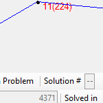

Welcome to the personal website of...
KRYSTAL LEE
Hello! My name is Krystal, and I am a recently graduate in Computer Science.
I am very interested in Software Development/Engineering, and am constantly looking to learn more!
This is my personal webpage I made to keep track of projects and interests.
My resume is available upon request. I would love to hear from you!
Enjoy your stay!
| PROGRAMMING | HOBBIES |
|---|---|
I have been interested in coding/programming since I was 10, and built my first webpage. However I did not seriously pursue it until my sophmore/junior year of college when I realized that my favorite classes in Biomedical Engineering all revolved around programming! Since then I've been trying to make up for lost time by soaking up as much knowledge as I can! Here are some things I have experience with... Languages: C/C++, Python, Java, OCaml, JavaScript, PHP, SQL, MATLAB
|
Although I have always been interested in the software side of computers I have recently also been getting more interested in the hardware side. I built my first computer in 2013 (which I am currently using to code this webpage!) and since then have built a couple more. It's definitely addictive! Asides from technology I also really love art! Which isn't too surprising since they both require creativity and technical skills. For much of my middle and high school career I spent my time drawing away. Additionally I enjoy dancing, cooking, and reading! I have many other interests that I never seem to have the time to fully pursue, but hope to one day, such as gardening, hooping, woodworking, and sewing. |
| UNIVERSITY | OTHER COURSEWORK |
|---|---|
I was a student at the University of Minnesota - Twin Cities majoring in Computer Science. My upper division tracks were Databases and Software & Data Systems Development. I have also taken courses in internet programming, operating systems, computer graphics, artificial intelligence, algorithms, etc. I find that the variety of coursework keeps me motivated and curious! I originally was a Biomedical Engineering major before switching to Computer Science, and thus have some coursework in classes for biology, thermodynamics, and chemistry. |
In between semesters at the Univeristy of Minnesota I also took classes as the College of Dupage. Mostly courses for their Computer Information Systems program! Some of the classes I took were for technical writing, networking, and different program language introductions. |
PROJECTS Click icons to see more details! |
|  | Apr to May 2016
|
Jan to May 2016
|
Nov to Dec 2015
|
Nov 2015
|
 |
Oct to Nov 2015
|
Oct to Nov 2015
|
 |
Sep to Nov 2015
|
Feb to May 2015
|
Apr 2015
|